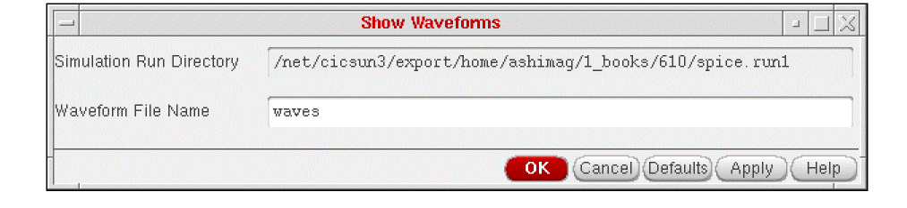
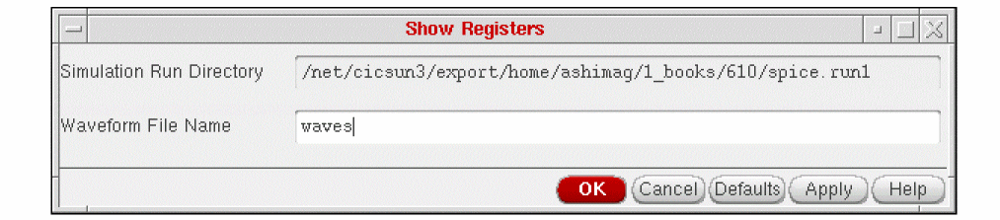
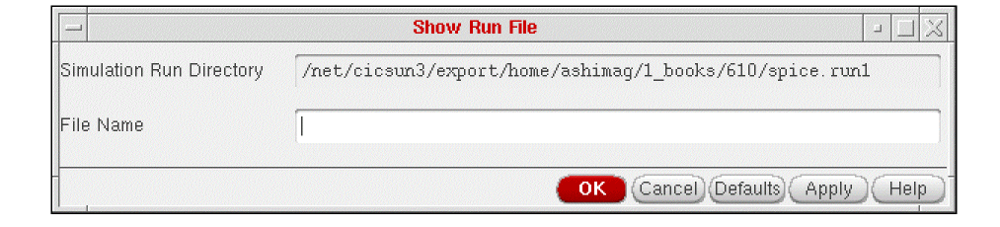

5
Displaying Results
In this chapter, you can find information about
- Displaying Waveform Results in the Graphical Environment
- Displaying Waveform Results in Register Form
- Displaying Text Results
- Displaying Netlisting Errors for Specific Nets or Instances
- Displaying Other Netlisting Errors (SILOS II Only)
- Displaying a Specified Text File
For information on SE SKILL APIs, see the Digital Design Netlisting and Simulation SKILL Reference.
Displaying Waveform Results in the Graphical Environment
To display the waveforms produced during a simulation
-
In the Schematic window, select – Simulation – Show Waveforms.
The following form appears:
The simulation run directory is the one you specified with the Initialize command. You cannot change this directory by editing this form. To change the simulation run directory, click Cancel and select the Initialize command again. -
In the Waveform File Name field, type the name of the waveform file to be displayed.
The system looks for this file in a directory called raw in the simulation run directory. The default waveform file is waves. Most of the standard interfaces do not require that you change this value. If you are using a tool that produces multiple waveform files, such as the Cadence HSPICE interface, you need to change this field to see the waveforms in each waveform file. -
Click OK.
The system opens the waveform window and displays information for the simulation run and the waveform file you specified. You can now execute any of the waveform commands to manipulate and display specific waveforms.
Displaying Waveform Results in Register Form
To display in register form the waveforms produced during a simulation
-
In the Schematic window, select – Simulation – Show Registers.
The Show Registers form appears:
Simulation Run Directory is a read-only field showing the path to the current simulation run directory. You cannot change this directory by editing this form. To change the simulation run directory, click Cancel and select the Initialize command again.
The Waveform File Name field specifies the name of the waveform file to be displayed. The system expects this file to be in the raw directory in the simulation run directory. The default waveform file is waves. Most of the standard interfaces do not require that you change this field. If you are using a tool that produces multiple waveform files, such as the Cadence HSPICE interface, you need to change this field to see the waveforms in each waveform file. -
Fill out the form and click OK.
The system opens the register display window.
Displaying Text Results
To see the text output (si.out) from the simulator
-
In the Schematic window, select – Simulation – Show Outputs – Show Output.
A window appears showing thesi.outfile from the current simulation run directory. This file contains the text output of the simulator, including any simulator error messages. - To close the window, select File – Close Window.
Displaying Netlisting Errors for Specific Nets or Instances
To highlight errors associated with a specific net or instance
- In the Schematic window, select Simulation – Show Outputs – Highlight Errors. The system places a probe on any object in your design that has an error. For example, the system might place a probe on a gate with an undriven input if your simulator does not support these. The system might place probes lower in the design hierarchy and then reflect them up the hierarchy to the instance containing them. Once probes are placed, you can use the standard probing functions to manipulate and remove them.
If an error cannot be isolated to a particular net or instance, the system does not place a probe. Use the Show Global Error command to see this type of error.
Displaying Other Netlisting Errors (SILOS II Only)
To display errors that are not associated with a particular net or instance
-
In the Schematic window, select – Simulation – Show Outputs – Show Global Error.
A window appears showing the error messages generated by the flat netlister or by your analysis tool. If no error file exists, a dialog box informs you that there were no global errors. - To close the window, select File – Close Window.
Displaying a Specified Text File
To display any text file in the current
-
In the Schematic window, select Simulation – Show Outputs – Show Run File.
The following form appears:
You cannot change the simulation run directory by editing this form. To change this directory, click Cancel and select the Initialize command again. -
Type the name of the file you want to see in the File Name field and click OK.
A window appears showing the file you specified. The system expects this file to be in the simulation run directory, so you do not need to type the full path to the file. - To close the window, select File – Close Window.
Return to top